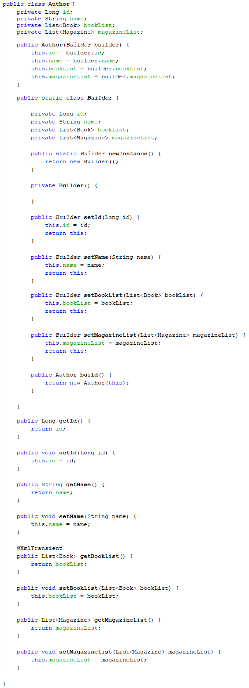
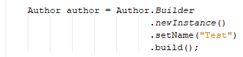

Builder
O padrão Builder é um padrão de projetos de software comum que é usado para encapsular a lógica de construção de um objeto. Este padrão é frequentemente utilizado quando o processo de construção de um objeto é considerado complexo e também é adequado quando se trata da construção de representações múltiplas de uma mesma classe.
O padrão Builder não está no escopo do trabalho, porém, achamos interessante a forma clara que ele permite instanciar novas classes e o aplicamos em nosso projeto como forma de aprendizado.
Ele foi utilizado nas classes model abaixo:
- Author (Autor)
- Copy (Exemplar)
- Loan (Empréstimo)
- Publisher (Editora)
- Reservation (Reserva)
- Subject (Assunto)
- User (Usuário)
Exemplo de implementação do model:

Exemplo de instanciação da classe:
